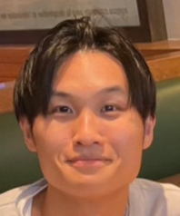

About me

I am a graduate student in Computational Biology and Medical Sciences (CBMS) at the Graduate School of
Frontier Sciences, The University of Tokyo. My research focuses on RNA informatics, particularly
developing computational methods for predicting RNA secondary and tertiary structures.
Research Interests
- RNA Secondary Structure Prediction - Developing algorithms for accurate prediction
of RNA folding patterns
- RNA Tertiary Structure Analysis - Computational methods for 3D RNA structure
modeling
- Bioinformatics - Application of machine learning and statistical methods to
biological data
- Structural Biology - Understanding the relationship between RNA structure and
function
Education & Career
現在
Graduate Student, Computational Biology and Medical Sciences (CBMS)
Graduate School of Frontier Sciences, The University of Tokyo
経歴
2019年4月 - 2023年3月: 東京大学理学部生物情報科学科
2024年4月 - 現在: 東京大学大学院新領域創成科学研究科 メディカル情報生命専攻 浅井研究室 （修士課程）
Favorite things & Interests
趣味・興味
- Guitar - jazz guitar 練習中
- アニメ・漫画 - 日常, Code Geass, Jojo, City the animation, 鬼滅の刃, とあるシリーズ, ぼざろ, Eva, ...
- スポーツ観戦 - 阪神タイガース, 新宿クリアソン
Recent Updates / 近況
2025年9月
名古屋にて開催された IIBMP2025 に参加し、口頭発表とポスター発表をしました。
たくさんの課題を見つけることができました。
生物情報科学若手の会やJapan Regional Student Groups (Japan RSG)の方々と繋がることができ、
それらの会に参加させていただくことになりました。
生命情報科学若手の会年会に参加しました。
2025年8月
長崎にて開催された RNAインフォマティクス研究会2025 に参加し、口頭発表をしました。
非常に充実した会で、多くの学びがありました。
2025年5月
DC1 を無事に提出しました。9月下旬の結果発表に向けて毎日お祈りをしています。
2025年3月
第81回バイオ情報学研究会で
プレゼンテーション優秀賞
を受賞しました。ncRNA配列の二次構造の確率分布における情報幾何学的特徴量について発表しました。
2024年11月
バイオ算という自主ゼミを結成し、ゼミメンバーと共に情報幾何学についての勉強を始めました。
2024年10月
Asia & Pacific Bioinformatics Joint Conference
2024で査読付き口頭発表を行いました。RNA逆フォールディングの最適化手法について発表しました。
2024年7月
Spain で開かれた Computational Approaches to RNA Structure and Function
2024で口頭発表を行いました。RNA
pseudoknot の可視化と統計について発表しました。
Publications & Presentations
Journal Papers
- PseudoknotVisualizer: Visualization of Pseudoknots on Three-Dimensional RNA Structures.
Takumi Otagaki, Goro Terai, Kiyoshi Asai, Junichi Iwakiri, (in revise)
Conference Presentations
- [予定]研究発表（ポスター発表, 口頭発表, 大会幹事）太田垣匠 (発表者), 浅井潔, “ループ構造を考慮した最⼤期待精度型 RNA⼆次構造予測⼿法 A Maximum Expected
Accuracy–Based RNA Secondary Structure Prediction Method Considering Loop Structures”,
TokyoBioinformaticsMeeting2025, 東京, 2025/11
- 研究発表（口頭, 査読なし）金指勇樹, 武田淳志, 鬼塚智大, 伊藤綾香, 磯貝龍邑, 太田垣匠 “Tree of Life は完成するのか？”, 第17回生命情報科学若手の会年会, 兵庫,
2025/9, Best NGS 賞 受賞
- 研究発表（ポスター発表, 査読なし）太田垣匠 (発表者), “RNA構造の予測と解析”, 生物情報科学若手の会年会2025, 兵庫, 2025/9
- 研究発表（口頭, 査読あり）太田垣匠 (発表者), “ループ構造を考慮した最⼤期待精度型 RNA⼆次構造予測⼿法 A Maximum Expected
Accuracy–Based RNA
Secondary Structure Prediction Method Considering Loop Structures”, 名古屋, IIBMP2025, 2025/9
- 研究発表（ポスター発表, 査読あり）太田垣匠 (発表者), “ループ構造を考慮した最⼤期待精度型 RNA⼆次構造予測⼿法 A Maximum Expected
Accuracy–Based RNA
Secondary Structure Prediction Method Considering Loop Structures”, 名古屋, IIBMP2025, 2025/9
- 研究発表（口頭, 査読なし）太田垣匠 (発表者), “RNA構造の予測と解析”, RNAインフォマティクス研究会2025, 長崎, 2025/8
- 研究発表（口頭, 査読あり）Takumi Otagaki (発表者), Kiyoshi Asai, “Optimization of RNA Inverse Folding using
the
differentiable McCaskill Algorithm and Base Pair Probability”, Asia & Pacific
BioinformaticsJoint
Conference 2024, 沖縄, 2024/10, 採択率 24.9 %
- 研究発表（口頭, 査読なし）太田垣匠 (発表者), “ncRNA配列の二次構造の確率分布における情報幾何学的特徴量の観察”, 第81回バイオ情報学研究会, 石川, 2025/3,
プレゼンテーション優秀賞 受賞
- 研究発表（口頭, 査読なし）Takumi Otagaki (発表者), Goro Terai, Kiyoshi Asai, Junichi Iwakiri,“Visualizing
Pseudoknots and Statistics on Pseudoknots”, Computational Approaches to RNA Structureand
Function
2024, Spain, 2024/7
https://www.benasque.org/2024rna/talks_contr/019_benasque2024_PKvisualization_TakumiOtagaki.pdf
- 研究発表（口頭, 査読なし）Takumi Otagaki (発表者), Kiyoshi Asai, “Optimization of RNA Inverse Foldingusing
the
differentiable McCaskill Algorithm and Base Pair Probability”, Tokyo Bioinformatics
Meeting2024,
神奈川, 2024/10
- 研究発表（ポスター発表, 査読なし） Takumi Otagaki (発表者) , Kiyoshi Asai, “Optimization of RNAInverse Folding
using the differentiable McCaskill Algorithm and Base Pair Probability”, Asia & Pacific
Bioinformatics Joint Conference 2024, 沖縄, 2024/10
- 研究発表（口頭, 査読なし）太田垣匠 (発表者), 浅井潔, “Optimization of RNA Inverse Folding using thedifferentiable
McCaskill Algorithm and Base Pair Probability”, RNAインフォマティクス研究会2024, 北海道, 2024/8
- 研究発表（ポスター発表, 査読なし）Junichi Iwakiri (発表者) , Takumi Otagaki, Kazuteru Yamamura, Shunsuke Sumi,
Ikuo
Kurisaki, Jiro Kondo and Kengo Sato, “Participation Report on RNA 3D structure prediction at
CASP16:
Usage and limitations of AlphaFold3”, Asia & Pacific Bioinformatics Joint Conference 2024,
沖縄,
2024/10
- 研究発表（口頭, 査読なし）太田垣匠 (発表者), “Jax を用いたGPU活用コーディング”, RNAインフォマティクス研究会 2024, 北海道, 2024/8
- 研究発表（口頭, 査読なし）太田垣匠 (発表者),“45S rDNA 単位の多様性を集団から収集したロングリードで推定する”, RNAインフォマティクス研究会2023, 兵庫,
2023/8
Awards & Honors
- 研究発表（口頭, 査読なし）金指勇樹, 武田淳志, 鬼塚智大, 伊藤綾香, 磯貝龍邑, 太田垣匠 “Tree of Life は完成するのか？”, 第17回生命情報科学若手の会年会, 兵庫,
2025/9, Best NGS 賞 受賞
- 研究発表（口頭, 査読なし）太田垣匠 (発表者), “ncRNA配列の二次構造の確率分布における情報幾何学的特徴量の観察”, 第81回バイオ情報学研究会, 石川, 2025/3,
プレゼンテーション優秀賞 受賞 https://www.ipsj.or.jp/award/bio-award3.html
- 受賞 京都大学グローバルサイエンスキャンパスELCAS基盤コース第10期成果発表会, 京都, 2018, “大腸菌から特定のタンパク質を精製する”, 生物学分野, プレゼンテーション賞
https://www.kyoto-u.ac.jp/ja/news/2018-03-09-0
- 受賞 第7回科学の甲子園全国大会 兵庫県立神戸高校代表, 筑波, 2018/3, 生物部門 全国第2位（ケニス賞）、総合成績 全国第7位
https://www.jst.go.jp/pr/info/info1307/besshi2.html
- Casp16 RNA Dojo チーム : Junichi Iwakiri, Takumi Otagaki, Kazuteru Yamamura, Shunsuke Sumi,
Ikuo
Kurisaki, Jiro Kondo and Kengo Sato, 16th Critical Assessment of Techniques for Protein
Structure Prediction (CASP) RNA 予測部門, 2024/5 ～ 2024/8, 全62チーム中 30位
https://predictioncenter.org/casp16/docs.cgi?view=groupsbyname
Projects & Software
学生自主ゼミ
- バイオ算
東京大学の生物情報科学を専門としている大学院生を中心とした会で、月に2回ほど集まって勉強会を開いています。
興味がある方はご連絡をください^^
スポーツAI
- データ駆動でサッカー解析
サッカーの tracking AI を用いて、試合の動画から毎秒ごとの選手の位置を割り出し、失点パターンや得点パターンなどのクラスタリングを実施。
コンペティション
- Kaggle
不定期で参加。友人と取り組んでいる。kaggle を通して新しい技術を学んでいます。
- Atcoder
たまに取り組んでいます。
GitHub Projects
研究で開発したソフトウェアやツールについては、GitHubをご覧ください。
Contact